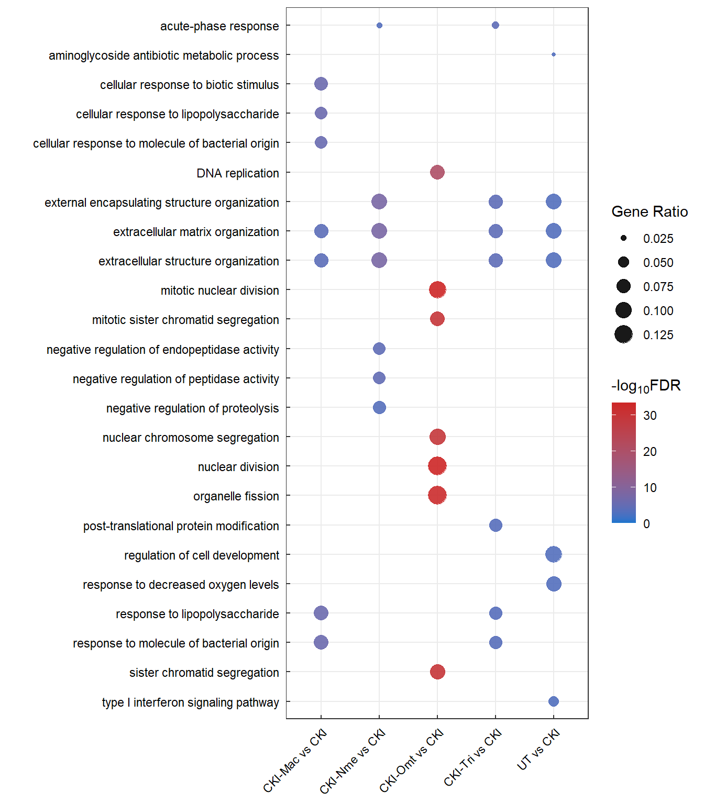

Last updated: 2021-11-08
Checks: 5 2
Knit directory: 01_CKI_DGE/1_analysis/
This reproducible R Markdown analysis was created with workflowr (version 1.6.2). The Checks tab describes the reproducibility checks that were applied when the results were created. The Past versions tab lists the development history.
The R Markdown file has unstaged changes. To know which version of the R Markdown file created these results, you’ll want to first commit it to the Git repo. If you’re still working on the analysis, you can ignore this warning. When you’re finished, you can run wflow_publish to commit the R Markdown file and build the HTML.
The global environment had objects present when the code in the R Markdown file was run. These objects can affect the analysis in your R Markdown file in unknown ways. For reproduciblity it’s best to always run the code in an empty environment. Use wflow_publish or wflow_build to ensure that the code is always run in an empty environment.
The following objects were defined in the global environment when these results were created:
| Name | Class | Size |
|---|---|---|
| anno_colours | list | 912 bytes |
| comparison_group | data.frame | 1.1 Kb |
| contrast | matrix;array | 1.7 Kb |
| designMatrix | matrix;array | 3.5 Kb |
| dge | DGEList | 12 Mb |
| estimateDispersion | DGEList | 12.5 Mb |
| fit_GLM_qlf | DGEGLM | 20.7 Mb |
| i | integer | 56 bytes |
| logCPM | matrix;array | 7.8 Kb |
| my_palette | character | 12.6 Kb |
| qlf | list | 101.1 Mb |
| qlf_decideTest | list | 5.6 Kb |
| qlf_filtered | list | 37.5 Mb |
| qlf_unfiltered | list | 49.2 Mb |
| sample_type | character | 624 bytes |
| test | data.frame | 2.3 Kb |
| test3 | data.frame | 310 Kb |
| treat | list | 96.2 Mb |
| treat_decideTest | list | 5.6 Kb |
| treat_filtered | list | 1.7 Mb |
| treat_unfiltered | list | 49.2 Mb |
| x | character | 120 bytes |
The command set.seed(12345) was run prior to running the code in the R Markdown file. Setting a seed ensures that any results that rely on randomness, e.g. subsampling or permutations, are reproducible.
Great job! Recording the operating system, R version, and package versions is critical for reproducibility.
Nice! There were no cached chunks for this analysis, so you can be confident that you successfully produced the results during this run.
Great job! Using relative paths to the files within your workflowr project makes it easier to run your code on other machines.
Great! You are using Git for version control. Tracking code development and connecting the code version to the results is critical for reproducibility.
The results in this page were generated with repository version 1a47b45. See the Past versions tab to see a history of the changes made to the R Markdown and HTML files.
Note that you need to be careful to ensure that all relevant files for the analysis have been committed to Git prior to generating the results (you can use wflow_publish or wflow_git_commit). workflowr only checks the R Markdown file, but you know if there are other scripts or data files that it depends on. Below is the status of the Git repository when the results were generated:
Ignored files:
Ignored: .Rhistory
Ignored: .Rproj.user/
Untracked files:
Untracked: 1_analysis/about.html
Untracked: 1_analysis/dge.html
Untracked: 1_analysis/figure/dge.Rmd/coolmap-1.png
Untracked: 1_analysis/figure/dge.Rmd/volcano_treat-1.png
Untracked: 1_analysis/figure/dge.Rmd/volcano_treat-2.png
Untracked: 1_analysis/figure/dge.Rmd/volcano_treat-3.png
Untracked: 1_analysis/figure/dge.Rmd/volcano_treat-4.png
Untracked: 1_analysis/figure/dge.Rmd/volcano_treat-5.png
Untracked: 1_analysis/figure/go.Rmd/
Untracked: 1_analysis/figure/kegg.Rmd/completePathway-1.png
Untracked: 1_analysis/figure/kegg.Rmd/partialPathway-1.png
Untracked: 1_analysis/figure/setUp.Rmd/afterFiltering-2.png
Untracked: 1_analysis/site_libs/
Untracked: 2_plots/1_setup/counts_after_filtering.svg
Untracked: 2_plots/1_setup/counts_before_filtering.svg
Untracked: 2_plots/2_dge/logCPM_heatmap.svg
Untracked: 2_plots/3_go/
Untracked: 2_plots/4_kegg/
Unstaged changes:
Modified: 0_data/rds_object/dge.rds
Modified: 0_data/rds_object/enrichGO_treat.rds
Modified: 0_data/rds_object/enrichKEGG_treat_filtered.rds
Modified: 0_data/rds_object/qlf.rds
Modified: 0_data/rds_object/qlf_filtered.rds
Modified: 0_data/rds_object/treat.rds
Modified: 0_data/rds_object/treat_filtered.rds
Modified: 0_data/rds_object/treat_unfiltered.rds
Modified: 1_analysis/about.Rmd
Modified: 1_analysis/dge.Rmd
Modified: 1_analysis/figure/dge.Rmd/MAplotCustom_treat-1.png
Modified: 1_analysis/figure/dge.Rmd/MAplotCustom_treat-2.png
Modified: 1_analysis/figure/dge.Rmd/MAplotCustom_treat-3.png
Modified: 1_analysis/figure/dge.Rmd/MAplotCustom_treat-4.png
Modified: 1_analysis/figure/dge.Rmd/MAplotCustom_treat-5.png
Modified: 1_analysis/figure/dge.Rmd/estimateDispersion-1.png
Modified: 1_analysis/figure/dge.Rmd/fitGLMqlf-1.png
Modified: 1_analysis/figure/dge.Rmd/pValueHistogram_treat-1.png
Modified: 1_analysis/figure/dge.Rmd/pValueHistogram_treat-2.png
Modified: 1_analysis/figure/dge.Rmd/pValueHistogram_treat-3.png
Modified: 1_analysis/figure/dge.Rmd/pValueHistogram_treat-4.png
Modified: 1_analysis/figure/dge.Rmd/pValueHistogram_treat-5.png
Modified: 1_analysis/figure/kegg.Rmd/unnamed-chunk-6-1.png
Modified: 1_analysis/figure/setUp.Rmd/MDSplot-1.png
Modified: 1_analysis/figure/setUp.Rmd/afterFiltering-1.png
Modified: 1_analysis/figure/setUp.Rmd/libraryChecks-1.png
Modified: 1_analysis/figure/setUp.Rmd/pcaSampleGroup-1.png
Modified: 1_analysis/figure/setUp.Rmd/pcaSampleType-1.png
Modified: 1_analysis/figure/setUp.Rmd/visualisingNormalisation-1.png
Modified: 1_analysis/go.Rmd
Modified: 1_analysis/kegg.Rmd
Modified: 1_analysis/obtainData.Rmd
Modified: 1_analysis/setUp.Rmd
Modified: 2_plots/1_setup/counts_before_and_after_filtering.svg
Modified: 2_plots/1_setup/library_size.svg
Modified: 2_plots/1_setup/sample_group_PCA_plot.svg
Modified: 2_plots/1_setup/sample_type_PCA_plot.svg
Modified: 2_plots/2_dge/MA_plot_treat_CKI-Mac vs CKI.svg
Modified: 2_plots/2_dge/MA_plot_treat_CKI-Nme vs CKI.svg
Modified: 2_plots/2_dge/MA_plot_treat_CKI-Omt vs CKI.svg
Modified: 2_plots/2_dge/MA_plot_treat_CKI-Tri vs CKI.svg
Modified: 2_plots/2_dge/MA_plot_treat_UT vs CKI.svg
Modified: 2_plots/2_dge/estimate_dispersion.svg
Modified: 2_plots/2_dge/qlf_dispersion.svg
Modified: 2_plots/2_dge/qlf_pValue_histogram_CKI-Mac vs CKI.svg
Modified: 2_plots/2_dge/qlf_pValue_histogram_CKI-Nme vs CKI.svg
Modified: 2_plots/2_dge/qlf_pValue_histogram_CKI-Omt vs CKI.svg
Modified: 2_plots/2_dge/qlf_pValue_histogram_CKI-Tri vs CKI.svg
Modified: 2_plots/2_dge/qlf_pValue_histogram_UT vs CKI.svg
Modified: 2_plots/2_dge/treat_pValue_histogram_CKI-Mac vs CKI.svg
Modified: 2_plots/2_dge/treat_pValue_histogram_CKI-Nme vs CKI.svg
Modified: 2_plots/2_dge/treat_pValue_histogram_CKI-Omt vs CKI.svg
Modified: 2_plots/2_dge/treat_pValue_histogram_CKI-Tri vs CKI.svg
Modified: 2_plots/2_dge/treat_pValue_histogram_UT vs CKI.svg
Modified: 2_plots/2_dge/volcano_plot_treat_CKI-Mac vs CKI.svg
Modified: 2_plots/2_dge/volcano_plot_treat_CKI-Nme vs CKI.svg
Modified: 2_plots/2_dge/volcano_plot_treat_CKI-Omt vs CKI.svg
Modified: 2_plots/2_dge/volcano_plot_treat_CKI-Tri vs CKI.svg
Modified: 2_plots/2_dge/volcano_plot_treat_UT vs CKI.svg
Modified: 3_output/enrichGO_treat.xlsx
Modified: 3_output/enrichKEGG_treat_unfiltered.xlsx
Modified: 3_output/qlf_filtered.xlsx
Modified: 3_output/treat_filtered.xlsx
Note that any generated files, e.g. HTML, png, CSS, etc., are not included in this status report because it is ok for generated content to have uncommitted changes.
These are the previous versions of the repository in which changes were made to the R Markdown (1_analysis/go.Rmd) and HTML (docs/go.html) files. If you’ve configured a remote Git repository (see ?wflow_git_remote), click on the hyperlinks in the table below to view the files as they were in that past version.
| File | Version | Author | Date | Message |
|---|---|---|---|---|
| Rmd | 70049b2 | Ha Tran | 2021-10-31 | Remove old GO and KEGG code, adjusted directory paths, updated KEGG, minor cosmetic changes |
| html | 70049b2 | Ha Tran | 2021-10-31 | Remove old GO and KEGG code, adjusted directory paths, updated KEGG, minor cosmetic changes |
| html | 6823b3c | Ha Tran | 2021-10-30 | Add minor cosmetic changes |
| Rmd | 7a6571b | Ha Tran | 2021-10-30 | minor changes |
| html | 7a6571b | Ha Tran | 2021-10-30 | minor changes |
| html | f5f4f74 | Ha Tran | 2021-10-30 | please please please |
| Rmd | a6d8f8a | Ha Tran | 2021-10-30 | what is happening |
| html | a6d8f8a | Ha Tran | 2021-10-30 | what is happening |
| Rmd | d769a7c | Ha Tran | 2021-10-30 | Upload GO and KEGG analysis |
| html | d769a7c | Ha Tran | 2021-10-30 | Upload GO and KEGG analysis |
# working with data
library(dplyr)
library(magrittr)
library(readr)
library(tibble)
library(reshape2)
library(tidyverse)
# Visualisation:
library(kableExtra)
library(ggplot2)
library(grid)
library(pander)
library(cowplot)
# Custom ggplot
library(ggbiplot)
library(ggrepel)
# Bioconductor packages:
library(edgeR)
library(limma)
library(Glimma)
library(clusterProfiler)
library(org.Hs.eg.db)
# library(enrichplot)
library(biomaRt)
theme_set(theme_bw())
theme_update(
legend.background = element_rect(fill = "transparent", colour = NA),
legend.box.background = element_rect(fill = "transparent", colour = NA),
panel.background = element_rect(fill = "transparent",colour = NA),
plot.background = element_rect(fill = "transparent", colour = NA),
plot.title = element_text(color = "gray20", size = 14, angle = 0, hjust = 0, vjust = .5, face = "bold"),
plot.subtitle = element_text(color = "gray25", size = 12, angle = 0, hjust = 0, vjust = .5, face = "plain"),
legend.title = element_text(color = "gray25", size = 11, angle = 0, hjust = 0, vjust = .5, face = "plain"),
legend.text = element_text(color = "gray25", size = 11, angle = 0, hjust = 0, vjust = .5, face = "plain"),
axis.text.x = element_text(color = "gray30", size = 10, angle = 0, hjust = .5, vjust = .5, face = "plain"),
axis.text.y = element_text(color = "gray30", size = 10, angle = 0, hjust = 1, vjust = 0, face = "plain"),
axis.title.x = element_text(color = "gray30", size = 12, angle = 0, hjust = .5, vjust = 0, face = "plain"),
axis.title.y = element_text(color = "gray30", size = 12, angle = 90, hjust = .5, vjust = .5, face = "plain"))DGElist object containing the raw feature count, sample metadata, and gene metadata, created in the Set Up stage.
# load DGElist previously created in the set up
dge <- readRDS(here::here("0_data/rds_object/dge.rds"))
designMatrix <- readRDS(here::here("0_data/rds_object/designMatrix.rds"))
contrast <- readRDS(here::here("0_data/rds_object/contrastMatrix.rds"))
treat <- readRDS(here::here("0_data/rds_object/treat.rds"))
treat_filtered <- readRDS(here::here("0_data/rds_object/treat_filtered.rds"))
# qlf <- readRDS(here::here("0_data/rds_object/qlf.rds"))
# qlf_filtered <- readRDS(here::here("0_data/rds_object/qlf_filtered.rds"))clusterProfiler::enrichGO packageGO enrichment analysis is performed using the DGE obtained from GLM:QLF + TREAT.
The top 30 most significant GO terms are displayed in relation to their respective comparison
comparison_group=colnames(contrast) %>% as.data.frame()
goSummaries <- url("https://uofabioinformaticshub.github.io/summaries2GO/data/goSummaries.RDS") %>%
readRDS()
minPath <- 3
# Create list object
enrichGO_treat=list()
for (i in 1:ncol(contrast)){
#at each iteration, let x = name of each contrast group
x=comparison_group[i,]
#populate the enrichGo list with all GO terms
GOresults <- enrichGO(gene = treat_filtered[[x]]$entrezid,
keyType = "ENTREZID",
ont = "ALL",
OrgDb = org.Hs.eg.db,
pAdjustMethod = "fdr")
enrichGO_treat[[x]] <- GOresults@result
enrichGO_treat[[x]] <- enrichGO_treat[[x]] %>% rownames_to_column("id") %>%
left_join(goSummaries) %>%
dplyr::filter(shortest_path >= minPath) %>%
column_to_rownames("id")
#filter only significant GO terms. all terms already sig
# enrichGO_treat_sig[[x]] <- enrichGO_treat[[x]] %>% filter(pvalue <= 0.05)
}
enrichGO_treat %>% saveRDS(file = here::here("0_data/rds_object/enrichGO_treat.rds"))
#save each unfiltered comparison group in the output directory
writexl::write_xlsx(x = enrichGO_treat,
path = here::here("3_output/enrichGO_treat.xlsx"))enrichGO_treat[["UT vs CKI"]][1:30,] %>% as.data.frame() %>% dplyr::select(-c("ID", "shortest_path", "longest_path", "terminal_node", "ontology")) %>% kable() %>% kable_styling(bootstrap_options = c("striped", "hover")) %>% scroll_box(height="600px")| ONTOLOGY | Description | GeneRatio | BgRatio | pvalue | p.adjust | qvalue | geneID | Count | |
|---|---|---|---|---|---|---|---|---|---|
| GO:0060284 | BP | regulation of cell development | 18/174 | 485/18862 | 0.0000006 | 0.0006822 | 0.0005439 | 6696/3569/7157/6790/1959/2335/3148/223117/3037/6692/10371/2039/5744/55179/84667/5649/7133/9856 | 18 |
| GO:0030198 | BP | extracellular matrix organization | 16/174 | 393/18862 | 0.0000008 | 0.0006822 | 0.0005439 | 1545/7042/4312/3371/6696/55612/3569/9510/63827/2335/857/3037/6692/4148/79625/7133 | 16 |
| GO:0043062 | BP | extracellular structure organization | 16/174 | 394/18862 | 0.0000008 | 0.0006822 | 0.0005439 | 1545/7042/4312/3371/6696/55612/3569/9510/63827/2335/857/3037/6692/4148/79625/7133 | 16 |
| GO:0045229 | BP | external encapsulating structure organization | 16/174 | 396/18862 | 0.0000009 | 0.0006822 | 0.0005439 | 1545/7042/4312/3371/6696/55612/3569/9510/63827/2335/857/3037/6692/4148/79625/7133 | 16 |
| GO:0036293 | BP | response to decreased oxygen levels | 15/174 | 360/18862 | 0.0000013 | 0.0007511 | 0.0005988 | 1543/51129/7042/3777/218/7157/891/768/5021/857/6781/79625/360/1958/406992 | 15 |
| GO:0030647 | BP | aminoglycoside antibiotic metabolic process | 4/174 | 10/18862 | 0.0000014 | 0.0007511 | 0.0005988 | 8644/57016/1645/1646 | 4 |
| GO:0060337 | BP | type I interferon signaling pathway | 8/174 | 95/18862 | 0.0000027 | 0.0010582 | 0.0008437 | 3433/3437/91543/8638/4940/3434/4938/1958 | 8 |
| GO:0071357 | BP | cellular response to type I interferon | 8/174 | 96/18862 | 0.0000030 | 0.0010582 | 0.0008437 | 3433/3437/91543/8638/4940/3434/4938/1958 | 8 |
| GO:0070482 | BP | response to oxygen levels | 15/174 | 385/18862 | 0.0000030 | 0.0010582 | 0.0008437 | 1543/51129/7042/3777/218/7157/891/768/5021/857/6781/79625/360/1958/406992 | 15 |
| GO:0034340 | BP | response to type I interferon | 8/174 | 101/18862 | 0.0000043 | 0.0011892 | 0.0009481 | 3433/3437/91543/8638/4940/3434/4938/1958 | 8 |
| GO:0001666 | BP | response to hypoxia | 14/174 | 348/18862 | 0.0000045 | 0.0011892 | 0.0009481 | 1543/51129/7042/3777/218/7157/891/768/857/6781/79625/360/1958/406992 | 14 |
| GO:0050767 | BP | regulation of neurogenesis | 14/174 | 348/18862 | 0.0000045 | 0.0011892 | 0.0009481 | 6696/3569/7157/1959/2335/3148/223117/6692/10371/55179/84667/5649/7133/9856 | 14 |
| GO:0034754 | BP | cellular hormone metabolic process | 9/174 | 136/18862 | 0.0000048 | 0.0011892 | 0.0009481 | 1543/1545/8644/57016/1645/1646/6696/25976/1958 | 9 |
| GO:0002931 | BP | response to ischemia | 6/174 | 50/18862 | 0.0000064 | 0.0014680 | 0.0011704 | 56666/7157/857/79625/3767/1958 | 6 |
| GO:0042448 | BP | progesterone metabolic process | 4/174 | 15/18862 | 0.0000088 | 0.0017986 | 0.0014340 | 8644/1645/1646/1958 | 4 |
| GO:0051960 | BP | regulation of nervous system development | 15/174 | 422/18862 | 0.0000090 | 0.0017986 | 0.0014340 | 6696/3569/7157/1959/2335/5021/3148/223117/6692/10371/55179/84667/5649/7133/9856 | 15 |
| GO:0008202 | BP | steroid metabolic process | 13/174 | 329/18862 | 0.0000120 | 0.0022286 | 0.0017768 | 1543/1545/19/8644/1645/7108/3290/1646/6696/25976/9619/6615/1958 | 13 |
| GO:0051797 | BP | regulation of hair follicle development | 4/174 | 17/18862 | 0.0000152 | 0.0025556 | 0.0020375 | 7042/10468/55612/3872 | 4 |
| GO:0071398 | BP | cellular response to fatty acid | 5/174 | 38/18862 | 0.0000247 | 0.0039619 | 0.0031587 | 8644/1645/1646/5166/891 | 5 |
| GO:0034308 | BP | primary alcohol metabolic process | 7/174 | 94/18862 | 0.0000263 | 0.0040057 | 0.0031937 | 1543/1545/8644/57016/1645/1646/224 | 7 |
| GO:1902644 | BP | tertiary alcohol metabolic process | 4/174 | 20/18862 | 0.0000302 | 0.0043968 | 0.0035055 | 8644/57016/1645/1646 | 4 |
| GO:0016137 | BP | glycoside metabolic process | 4/174 | 21/18862 | 0.0000370 | 0.0051579 | 0.0041123 | 8644/57016/1645/1646 | 4 |
| GO:0032069 | BP | regulation of nuclease activity | 4/174 | 22/18862 | 0.0000449 | 0.0059981 | 0.0047821 | 8638/4940/3148/4938 | 4 |
| GO:0048762 | BP | mesenchymal cell differentiation | 10/174 | 231/18862 | 0.0000585 | 0.0072011 | 0.0057413 | 7042/147906/3569/2335/223117/7041/3037/10371/6615/81610 | 10 |
| GO:0071453 | BP | cellular response to oxygen levels | 10/174 | 231/18862 | 0.0000585 | 0.0072011 | 0.0057413 | 3777/7157/891/768/857/6781/79625/360/1958/406992 | 10 |
| GO:1901654 | BP | response to ketone | 9/174 | 193/18862 | 0.0000781 | 0.0092620 | 0.0073844 | 8644/7042/1646/3371/6696/768/5021/857/3767 | 9 |
| GO:0042634 | BP | regulation of hair cycle | 4/174 | 26/18862 | 0.0000892 | 0.0102090 | 0.0081394 | 7042/10468/55612/3872 | 4 |
| GO:0008544 | BP | epidermis development | 14/174 | 463/18862 | 0.0001038 | 0.0108053 | 0.0086148 | 8644/7042/10468/55612/10626/3866/3872/3855/29841/5744/6615/3885/360/224 | 14 |
| GO:0031069 | BP | hair follicle morphogenesis | 4/174 | 27/18862 | 0.0001040 | 0.0108053 | 0.0086148 | 7042/10468/3872/6615 | 4 |
| GO:0001558 | BP | regulation of cell growth | 13/174 | 406/18862 | 0.0001046 | 0.0108053 | 0.0086148 | 7042/6696/147906/3484/7157/2335/4881/3872/223117/8877/10371/8835/9856 | 13 |
enrichGO_treat[["CKI-Mac vs CKI"]][1:30,] %>% as.data.frame() %>% dplyr::select(-c("ID", "shortest_path", "longest_path", "terminal_node", "ontology")) %>% kable() %>% kable_styling(bootstrap_options = c("striped", "hover")) %>% scroll_box(height="600px")| ONTOLOGY | Description | GeneRatio | BgRatio | pvalue | p.adjust | qvalue | geneID | Count | |
|---|---|---|---|---|---|---|---|---|---|
| GO:0071216 | BP | cellular response to biotic stimulus | 20/288 | 233/18862 | 0.00e+00 | 0.0000014 | 0.0000011 | 3569/2919/3553/2921/1437/3552/1440/2920/3576/4057/26525/11009/5054/7128/3656/3309/445/929/1649/114548 | 20 |
| GO:0002237 | BP | response to molecule of bacterial origin | 24/288 | 346/18862 | 0.00e+00 | 0.0000014 | 0.0000011 | 3569/2919/3553/9076/2921/6648/1437/3552/1440/1543/2920/3576/4057/26525/11009/5054/7128/3656/445/929/210/114548/4091/1755 | 24 |
| GO:0032496 | BP | response to lipopolysaccharide | 23/288 | 326/18862 | 0.00e+00 | 0.0000014 | 0.0000011 | 3569/2919/3553/9076/2921/6648/1437/3552/1440/1543/2920/3576/4057/26525/11009/5054/7128/3656/445/929/210/114548/4091 | 23 |
| GO:0071222 | BP | cellular response to lipopolysaccharide | 18/288 | 197/18862 | 0.00e+00 | 0.0000014 | 0.0000011 | 3569/2919/3553/2921/1437/3552/1440/2920/3576/4057/26525/11009/5054/7128/3656/445/929/114548 | 18 |
| GO:0071219 | BP | cellular response to molecule of bacterial origin | 18/288 | 209/18862 | 0.00e+00 | 0.0000028 | 0.0000023 | 3569/2919/3553/2921/1437/3552/1440/2920/3576/4057/26525/11009/5054/7128/3656/445/929/114548 | 18 |
| GO:0030198 | BP | extracellular matrix organization | 22/288 | 393/18862 | 2.00e-07 | 0.0000978 | 0.0000811 | 3569/11174/4319/3911/5054/170689/84830/333/4054/3371/8515/284217/64856/4314/1294/83716/5806/7076/7490/3693/375790/101 | 22 |
| GO:0043062 | BP | extracellular structure organization | 22/288 | 394/18862 | 2.00e-07 | 0.0000978 | 0.0000811 | 3569/11174/4319/3911/5054/170689/84830/333/4054/3371/8515/284217/64856/4314/1294/83716/5806/7076/7490/3693/375790/101 | 22 |
| GO:0045229 | BP | external encapsulating structure organization | 22/288 | 396/18862 | 2.00e-07 | 0.0000978 | 0.0000811 | 3569/11174/4319/3911/5054/170689/84830/333/4054/3371/8515/284217/64856/4314/1294/83716/5806/7076/7490/3693/375790/101 | 22 |
| GO:0002526 | BP | acute inflammatory response | 11/288 | 107/18862 | 7.00e-07 | 0.0003094 | 0.0002564 | 3569/3553/5743/3552/3570/445/2152/114548/26471/3700/101 | 11 |
| GO:0097191 | BP | extrinsic apoptotic signaling pathway | 15/288 | 217/18862 | 1.30e-06 | 0.0004944 | 0.0004097 | 3553/1437/3552/652/5054/7128/2852/2537/467/3570/4803/7185/2261/3624/8794 | 15 |
| GO:0048732 | BP | gland development | 21/288 | 413/18862 | 1.60e-06 | 0.0005662 | 0.0004692 | 3569/9076/4041/1543/5361/652/3911/7128/3371/255738/284217/7477/2194/445/1950/3219/1054/7490/80139/8862/79152 | 21 |
| GO:0006953 | BP | acute-phase response | 7/288 | 46/18862 | 5.80e-06 | 0.0018255 | 0.0015127 | 3569/3553/5743/3552/3570/445/3700 | 7 |
| GO:0001667 | BP | ameboidal-type cell migration | 21/288 | 473/18862 | 1.33e-05 | 0.0038873 | 0.0032213 | 5743/4070/4041/652/3911/29775/84830/2896/6286/284361/5801/3397/25959/9734/1950/85329/340719/10500/7076/10501/406992 | 21 |
| GO:0008203 | BP | cholesterol metabolic process | 11/288 | 149/18862 | 1.86e-05 | 0.0049912 | 0.0041360 | 4041/19/7108/4598/255738/1583/2194/8542/2629/84649/9023 | 11 |
| GO:0036499 | BP | PERK-mediated unfolded protein response | 5/288 | 23/18862 | 2.15e-05 | 0.0049912 | 0.0041360 | 3576/467/3309/1649/3484 | 5 |
| GO:0031667 | BP | response to nutrient levels | 20/288 | 451/18862 | 2.18e-05 | 0.0049912 | 0.0041360 | 6648/1543/5919/10634/218/3371/467/25959/255738/3309/445/1649/7378/360/490/210/6653/2629/6566/80763 | 20 |
| GO:0031960 | BP | response to corticosteroid | 11/288 | 152/18862 | 2.24e-05 | 0.0049912 | 0.0041360 | 3569/9076/3490/2852/218/445/490/210/2629/6446/54206 | 11 |
| GO:2001236 | BP | regulation of extrinsic apoptotic signaling pathway | 11/288 | 154/18862 | 2.53e-05 | 0.0053247 | 0.0044123 | 3553/1437/3552/652/5054/7128/2852/2537/467/7185/3624 | 11 |
| GO:0150077 | BP | regulation of neuroinflammatory response | 6/288 | 40/18862 | 2.98e-05 | 0.0057254 | 0.0047444 | 3569/3553/5743/2896/4314/26471 | 6 |
| GO:0046683 | BP | response to organophosphorus | 10/288 | 130/18862 | 3.13e-05 | 0.0057254 | 0.0047444 | 1645/5031/218/3309/5029/445/9127/7184/7490/10060 | 10 |
| GO:1902652 | BP | secondary alcohol metabolic process | 11/288 | 158/18862 | 3.21e-05 | 0.0057254 | 0.0047444 | 4041/19/7108/4598/255738/1583/2194/8542/2629/84649/9023 | 11 |
| GO:1901653 | BP | cellular response to peptide | 18/288 | 391/18862 | 3.48e-05 | 0.0057254 | 0.0047444 | 3553/5919/2852/245972/896/23371/3397/255738/9734/1583/9021/445/490/80339/6653/837/3484/54206 | 18 |
| GO:0006024 | BP | glycosaminoglycan biosynthetic process | 9/288 | 107/18862 | 3.86e-05 | 0.0060962 | 0.0050517 | 3553/2817/56548/9394/54480/1950/57214/55501/375790 | 9 |
| GO:0071375 | BP | cellular response to peptide hormone stimulus | 16/288 | 325/18862 | 4.29e-05 | 0.0062027 | 0.0051399 | 3553/5919/2852/245972/896/23371/255738/9734/1583/9021/445/490/80339/6653/3484/54206 | 16 |
| GO:0010466 | BP | negative regulation of peptidase activity | 14/288 | 257/18862 | 4.37e-05 | 0.0062027 | 0.0051399 | 4057/5054/135228/6690/2537/27290/4803/1294/27151/6653/280664/7076/3700/221476 | 14 |
| GO:0032869 | BP | cellular response to insulin stimulus | 13/288 | 226/18862 | 4.68e-05 | 0.0062027 | 0.0051399 | 3553/5919/245972/896/23371/255738/9734/9021/490/80339/6653/3484/54206 | 13 |
| GO:0016125 | BP | sterol metabolic process | 11/288 | 165/18862 | 4.78e-05 | 0.0062027 | 0.0051399 | 4041/19/7108/4598/255738/1583/2194/8542/2629/84649/9023 | 11 |
| GO:0009991 | BP | response to extracellular stimulus | 20/288 | 477/18862 | 4.81e-05 | 0.0062027 | 0.0051399 | 6648/1543/5919/10634/218/3371/467/25959/255738/3309/445/1649/7378/360/490/210/6653/2629/6566/80763 | 20 |
| GO:0150076 | BP | neuroinflammatory response | 6/288 | 44/18862 | 5.21e-05 | 0.0063710 | 0.0052793 | 3569/3553/5743/2896/4314/26471 | 6 |
| GO:0042326 | BP | negative regulation of phosphorylation | 18/288 | 407/18862 | 5.84e-05 | 0.0069160 | 0.0057310 | 3553/4041/652/7128/135228/6690/3486/1850/9021/5570/5787/6653/2629/3624/26471/4091/406992/54206 | 18 |
enrichGO_treat[["CKI-Nme vs CKI"]][1:30,] %>% as.data.frame() %>% dplyr::select(-c("ID", "shortest_path", "longest_path", "terminal_node", "ontology")) %>% kable() %>% kable_styling(bootstrap_options = c("striped", "hover")) %>% scroll_box(height="600px")| ONTOLOGY | Description | GeneRatio | BgRatio | pvalue | p.adjust | qvalue | geneID | Count | |
|---|---|---|---|---|---|---|---|---|---|
| GO:0030198 | BP | extracellular matrix organization | 30/324 | 393/18862 | 0.00e+00 | 0.0000000 | 0.0000000 | 3569/11174/333/1294/83716/169611/170689/3693/4324/4319/3911/4054/84830/7076/8515/4314/2621/3386/7490/140766/284217/3371/64856/4312/5045/1999/55612/2264/1605/55790 | 30 |
| GO:0043062 | BP | extracellular structure organization | 30/324 | 394/18862 | 0.00e+00 | 0.0000000 | 0.0000000 | 3569/11174/333/1294/83716/169611/170689/3693/4324/4319/3911/4054/84830/7076/8515/4314/2621/3386/7490/140766/284217/3371/64856/4312/5045/1999/55612/2264/1605/55790 | 30 |
| GO:0045229 | BP | external encapsulating structure organization | 30/324 | 396/18862 | 0.00e+00 | 0.0000000 | 0.0000000 | 3569/11174/333/1294/83716/169611/170689/3693/4324/4319/3911/4054/84830/7076/8515/4314/2621/3386/7490/140766/284217/3371/64856/4312/5045/1999/55612/2264/1605/55790 | 30 |
| GO:0010466 | BP | negative regulation of peptidase activity | 20/324 | 257/18862 | 0.00e+00 | 0.0000203 | 0.0000173 | 1294/27290/7076/2537/2621/27151/1469/1472/221476/5265/6690/4804/1718/135228/9709/5045/4057/6653/3700/684 | 20 |
| GO:0010951 | BP | negative regulation of endopeptidase activity | 19/324 | 245/18862 | 1.00e-07 | 0.0000390 | 0.0000331 | 1294/27290/7076/2537/2621/27151/1469/1472/5265/6690/4804/1718/135228/9709/5045/4057/6653/3700/684 | 19 |
| GO:0045861 | BP | negative regulation of proteolysis | 21/324 | 346/18862 | 6.00e-07 | 0.0004051 | 0.0003440 | 1294/27290/7076/2537/2621/27151/1469/1472/221476/5265/6690/4804/1718/135228/9709/5045/4057/6653/4130/3700/684 | 21 |
| GO:0006953 | BP | acute-phase response | 8/324 | 46/18862 | 1.00e-06 | 0.0005573 | 0.0004732 | 5743/3569/3552/6288/5265/6289/59307/3700 | 8 |
| GO:0051346 | BP | negative regulation of hydrolase activity | 24/324 | 456/18862 | 1.30e-06 | 0.0006218 | 0.0005279 | 1294/114794/27290/51129/7076/2537/2621/27151/1469/1472/221476/5265/6690/4804/1718/2644/135228/9709/5045/4057/9734/6653/3700/684 | 24 |
| GO:0036499 | BP | PERK-mediated unfolded protein response | 6/324 | 23/18862 | 1.90e-06 | 0.0008159 | 0.0006928 | 3576/3309/467/1649/3484/9709 | 6 |
| GO:0002576 | BP | platelet degranulation | 12/324 | 128/18862 | 2.20e-06 | 0.0008176 | 0.0006942 | 5919/7076/1191/23052/2621/1521/7277/5265/1950/135228/7873/3700 | 12 |
| GO:0001667 | BP | ameboidal-type cell migration | 24/324 | 473/18862 | 2.50e-06 | 0.0008551 | 0.0007260 | 5743/4070/4041/652/2896/3911/29775/84830/3397/7076/340719/25959/6286/2348/85329/284361/1950/5801/406992/10501/55612/9734/23616/10500 | 24 |
| GO:0043687 | BP | post-translational protein modification | 20/324 | 361/18862 | 4.80e-06 | 0.0013918 | 0.0011817 | 7184/3490/3569/51676/10618/652/255738/5589/3487/7076/9021/2621/56975/3371/5265/64856/26232/3484/8542/140462 | 20 |
| GO:0060976 | BP | coronary vasculature development | 7/324 | 44/18862 | 9.20e-06 | 0.0022010 | 0.0018687 | 11174/652/2852/4091/8862/5754/5159 | 7 |
| GO:0009991 | BP | response to extracellular stimulus | 23/324 | 477/18862 | 9.30e-06 | 0.0022010 | 0.0018687 | 1543/5919/255738/360/218/3309/10634/2629/2621/6566/80763/25959/2348/3371/467/2353/490/7378/1649/6653/83667/168620/2539 | 23 |
| GO:0008203 | BP | cholesterol metabolic process | 12/324 | 149/18862 | 1.04e-05 | 0.0023327 | 0.0019806 | 4041/7108/19/255738/4598/2629/10682/6609/84649/1718/8542/2539 | 12 |
| GO:0031667 | BP | response to nutrient levels | 22/324 | 451/18862 | 1.22e-05 | 0.0025639 | 0.0021769 | 1543/5919/255738/360/218/3309/10634/2629/2621/6566/80763/25959/2348/3371/467/490/7378/1649/6653/83667/168620/2539 | 22 |
| GO:0052547 | BP | regulation of peptidase activity | 22/324 | 455/18862 | 1.39e-05 | 0.0026060 | 0.0022126 | 2896/1294/27290/2852/7076/2537/2621/27151/1469/1472/221476/5265/6690/4804/1718/135228/9709/5045/4057/6653/3700/684 | 22 |
| GO:0031668 | BP | cellular response to extracellular stimulus | 15/324 | 235/18862 | 1.44e-05 | 0.0026060 | 0.0022126 | 255738/360/3309/10634/2629/2621/25959/2348/3371/467/2353/490/7378/83667/168620 | 15 |
| GO:0030574 | BP | collagen catabolic process | 7/324 | 47/18862 | 1.44e-05 | 0.0026060 | 0.0022126 | 9902/4324/4319/4314/140766/4312/5045 | 7 |
| GO:0002526 | BP | acute inflammatory response | 10/324 | 107/18862 | 1.57e-05 | 0.0027058 | 0.0022973 | 5743/3569/3552/6288/5265/6289/59307/26471/3700/56998 | 10 |
| GO:0031669 | BP | cellular response to nutrient levels | 14/324 | 210/18862 | 1.71e-05 | 0.0028222 | 0.0023961 | 255738/360/3309/10634/2629/2621/25959/2348/3371/467/490/7378/83667/168620 | 14 |
| GO:1902652 | BP | secondary alcohol metabolic process | 12/324 | 158/18862 | 1.89e-05 | 0.0029896 | 0.0025383 | 4041/7108/19/255738/4598/2629/10682/6609/84649/1718/8542/2539 | 12 |
| GO:0022612 | BP | gland morphogenesis | 10/324 | 111/18862 | 2.17e-05 | 0.0032878 | 0.0027914 | 4041/3569/652/5361/3911/284217/3371/1436/1999/1605 | 10 |
| GO:0007411 | BP | axon guidance | 16/324 | 277/18862 | 2.58e-05 | 0.0037690 | 0.0032000 | 2817/128434/5361/3911/4854/6324/284217/5649/4804/1436/2049/10381/10501/1605/10500/1808 | 16 |
| GO:0097485 | BP | neuron projection guidance | 16/324 | 278/18862 | 2.70e-05 | 0.0037921 | 0.0032197 | 2817/128434/5361/3911/4854/6324/284217/5649/4804/1436/2049/10381/10501/1605/10500/1808 | 16 |
| GO:0016125 | BP | sterol metabolic process | 12/324 | 165/18862 | 2.91e-05 | 0.0039472 | 0.0033513 | 4041/7108/19/255738/4598/2629/10682/6609/84649/1718/8542/2539 | 12 |
| GO:0006984 | BP | ER-nucleus signaling pathway | 7/324 | 53/18862 | 3.24e-05 | 0.0041184 | 0.0034967 | 7184/3576/3309/467/1649/3484/9709 | 7 |
| GO:0002237 | BP | response to molecule of bacterial origin | 18/324 | 346/18862 | 3.29e-05 | 0.0041184 | 0.0034967 | 1543/9076/3569/2921/2919/3576/3552/2920/11009/929/4091/26525/1755/2353/59307/4129/1440/4057 | 18 |
| GO:0048732 | BP | gland development | 20/324 | 413/18862 | 3.36e-05 | 0.0041184 | 0.0034967 | 1543/4041/9076/3569/652/5361/255738/7477/5589/3911/7490/8862/284217/3371/1950/1054/1436/2049/1999/1605 | 20 |
| GO:0061138 | BP | morphogenesis of a branching epithelium | 12/324 | 173/18862 | 4.64e-05 | 0.0055014 | 0.0046709 | 4070/4041/652/5361/3911/9021/7490/284217/3371/1950/1605/56998 | 12 |
enrichGO_treat[["CKI-Omt vs CKI"]][1:30,] %>% as.data.frame() %>% dplyr::select(-c("ID", "shortest_path", "longest_path", "terminal_node", "ontology")) %>% kable() %>% kable_styling(bootstrap_options = c("striped", "hover")) %>% scroll_box(height="600px")| ONTOLOGY | Description | GeneRatio | BgRatio | pvalue | p.adjust | qvalue | geneID | Count | |
|---|---|---|---|---|---|---|---|---|---|
| GO:0000280 | BP | nuclear division | 79/593 | 436/18862 | 0 | 0 | 0 | 4288/3553/146909/3833/64151/7153/4041/9088/24137/11130/4751/699/113130/3552/11004/983/23310/23397/3832/1062/83990/8438/10635/10615/701/9134/9585/10403/54443/9787/10460/5347/995/4605/7272/51203/151648/84722/9700/83540/81620/9319/2177/4085/9735/990/79075/5888/55143/57820/9133/891/83903/652/151246/348654/54892/11065/3209/25788/1063/9212/1950/29781/9055/4000/3619/5155/1843/29988/3835/2175/286151/84250/64105/10051/84861/55124/84057 | 79 |
| GO:0140014 | BP | mitotic nuclear division | 66/593 | 296/18862 | 0 | 0 | 0 | 4288/3553/146909/3833/64151/4041/9088/24137/11130/4751/699/113130/3552/11004/983/23310/23397/3832/1062/10615/701/9585/10403/54443/9787/10460/5347/995/4605/7272/51203/151648/84722/9700/83540/81620/9319/4085/9735/990/79075/55143/9133/891/83903/652/151246/348654/54892/11065/3209/1063/9212/1950/29781/9055/4000/3619/5155/1843/3835/286151/84250/64105/10051/84861 | 66 |
| GO:0048285 | BP | organelle fission | 81/593 | 486/18862 | 0 | 0 | 0 | 4288/3553/146909/3833/64151/7153/4041/9088/24137/11130/4751/699/113130/3552/11004/983/23310/23397/3832/1062/83990/8438/10635/10615/701/9134/9585/10403/54443/9787/10460/5347/995/4605/7272/51203/151648/84722/9700/83540/81620/9319/2177/4085/9735/990/79075/5888/55143/57820/9133/891/83903/652/8799/151246/348654/54892/11065/3209/25788/1063/9212/1950/29781/26052/9055/4000/3619/5155/1843/29988/3835/2175/286151/84250/64105/10051/84861/55124/84057 | 81 |
| GO:0000070 | BP | mitotic sister chromatid segregation | 48/593 | 164/18862 | 0 | 0 | 0 | 146909/3833/64151/24137/11130/4751/699/113130/11004/23310/23397/1062/10615/701/10403/9787/10460/5347/7272/51203/151648/84722/9700/83540/81620/9319/4085/9735/990/79075/55143/891/83903/151246/348654/54892/11065/1063/9212/29781/9055/3619/1843/3835/84250/64105/10051/84861 | 48 |
| GO:0000819 | BP | sister chromatid segregation | 52/593 | 199/18862 | 0 | 0 | 0 | 146909/3833/64151/7153/24137/11130/4751/699/113130/11004/23310/157570/23397/1062/10615/701/10403/9787/10460/5347/7272/51203/151648/84722/9700/83540/81620/9319/4085/9735/990/79075/2237/55143/891/83903/151246/348654/54892/11065/1063/9212/29781/9055/3619/1843/3835/116028/84250/64105/10051/84861 | 52 |
| GO:0098813 | BP | nuclear chromosome segregation | 59/593 | 273/18862 | 0 | 0 | 0 | 146909/3833/64151/7153/24137/11130/4751/699/113130/11004/23310/157570/23397/1062/83990/10615/701/9134/10403/9787/10460/5347/7272/51203/151648/84722/9700/83540/81620/9319/57082/2177/4085/9735/990/79075/2237/55143/57820/891/83903/151246/348654/54892/11065/1063/9212/81610/29781/9055/3619/1843/3835/116028/84250/64105/10051/84861/55166 | 59 |
| GO:0006260 | BP | DNA replication | 50/593 | 280/18862 | 0 | 0 | 0 | 6241/55388/890/672/983/157570/9156/641/83990/10036/9768/9134/8318/63967/51659/84296/51514/9837/63922/374393/79733/5557/81620/9401/990/79075/5888/2237/10721/8208/90381/5427/348654/55345/80119/10293/4174/4796/4175/63901/1950/79915/4998/6240/5983/11169/580/116028/5426/51750 | 50 |
| GO:0007088 | BP | regulation of mitotic nuclear division | 32/593 | 109/18862 | 0 | 0 | 0 | 4288/3553/4041/9088/11130/4751/699/3552/701/9585/10403/9787/5347/995/7272/51203/9700/81620/9319/4085/9735/891/652/348654/3209/1063/9212/1950/5155/1843/286151/84861 | 32 |
| GO:0051783 | BP | regulation of nuclear division | 34/593 | 135/18862 | 0 | 0 | 0 | 4288/3553/4041/9088/11130/4751/699/3552/10635/701/9585/10403/9787/5347/995/7272/51203/9700/81620/9319/4085/9735/891/652/348654/3209/1063/9212/1950/5155/1843/286151/84861/55124 | 34 |
| GO:0051306 | BP | mitotic sister chromatid separation | 23/593 | 66/18862 | 0 | 0 | 0 | 11130/699/1062/701/10403/9787/10460/5347/7272/9700/81620/9319/4085/9735/990/891/348654/11065/1063/9212/29781/1843/84861 | 23 |
| GO:0007091 | BP | metaphase/anaphase transition of mitotic cell cycle | 22/593 | 61/18862 | 0 | 0 | 0 | 11130/699/1062/701/10403/9787/10460/5347/7272/9700/81620/9319/4085/9735/990/891/348654/11065/1063/9212/1843/84861 | 22 |
| GO:0033045 | BP | regulation of sister chromatid segregation | 23/593 | 71/18862 | 0 | 0 | 0 | 11130/699/1062/701/10403/9787/10460/5347/7272/9700/81620/9319/4085/9735/990/891/348654/11065/1063/9212/1843/116028/84861 | 23 |
| GO:0010965 | BP | regulation of mitotic sister chromatid separation | 22/593 | 64/18862 | 0 | 0 | 0 | 11130/699/1062/701/10403/9787/10460/5347/7272/9700/81620/9319/4085/9735/990/891/348654/11065/1063/9212/1843/84861 | 22 |
| GO:0044784 | BP | metaphase/anaphase transition of cell cycle | 22/593 | 64/18862 | 0 | 0 | 0 | 11130/699/1062/701/10403/9787/10460/5347/7272/9700/81620/9319/4085/9735/990/891/348654/11065/1063/9212/1843/84861 | 22 |
| GO:0051983 | BP | regulation of chromosome segregation | 25/593 | 89/18862 | 0 | 0 | 0 | 4288/11130/699/11004/1062/701/10403/9787/10460/5347/7272/9700/81620/9319/4085/9735/990/891/348654/11065/1063/9212/1843/116028/84861 | 25 |
| GO:0030071 | BP | regulation of mitotic metaphase/anaphase transition | 21/593 | 59/18862 | 0 | 0 | 0 | 11130/699/1062/701/10403/9787/5347/7272/9700/81620/9319/4085/9735/990/891/348654/11065/1063/9212/1843/84861 | 21 |
| GO:1902099 | BP | regulation of metaphase/anaphase transition of cell cycle | 21/593 | 62/18862 | 0 | 0 | 0 | 11130/699/1062/701/10403/9787/5347/7272/9700/81620/9319/4085/9735/990/891/348654/11065/1063/9212/1843/84861 | 21 |
| GO:1905818 | BP | regulation of chromosome separation | 22/593 | 71/18862 | 0 | 0 | 0 | 11130/699/1062/701/10403/9787/10460/5347/7272/9700/81620/9319/4085/9735/990/891/348654/11065/1063/9212/1843/84861 | 22 |
| GO:0006261 | BP | DNA-dependent DNA replication | 31/593 | 157/18862 | 0 | 0 | 0 | 55388/641/9134/8318/51659/84296/9837/63922/79733/5557/81620/9401/990/79075/5888/2237/10721/90381/5427/348654/55345/10293/4174/4796/4175/63901/4998/5983/11169/5426/51750 | 31 |
| GO:0051304 | BP | chromosome separation | 24/593 | 95/18862 | 0 | 0 | 0 | 7153/11130/699/1062/701/10403/9787/10460/5347/7272/9700/81620/9319/4085/9735/990/891/348654/11065/1063/9212/29781/1843/84861 | 24 |
| GO:0090068 | BP | positive regulation of cell cycle process | 41/593 | 303/18862 | 0 | 0 | 0 | 3553/4041/672/11113/113130/3552/983/10733/10635/10615/9585/10403/894/1543/9787/995/51514/993/51203/79733/9700/81620/4085/990/2237/891/896/348654/11065/3209/9212/1869/1950/81610/79915/3398/1647/5155/84250/7161/55124 | 41 |
| GO:0007094 | BP | mitotic spindle assembly checkpoint | 16/593 | 37/18862 | 0 | 0 | 0 | 11130/699/701/10403/5347/7272/81620/9319/4085/9735/891/348654/1063/9212/1843/84861 | 16 |
| GO:0071173 | BP | spindle assembly checkpoint | 16/593 | 37/18862 | 0 | 0 | 0 | 11130/699/701/10403/5347/7272/81620/9319/4085/9735/891/348654/1063/9212/1843/84861 | 16 |
| GO:0071174 | BP | mitotic spindle checkpoint | 16/593 | 37/18862 | 0 | 0 | 0 | 11130/699/701/10403/5347/7272/81620/9319/4085/9735/891/348654/1063/9212/1843/84861 | 16 |
| GO:0031577 | BP | spindle checkpoint | 16/593 | 38/18862 | 0 | 0 | 0 | 11130/699/701/10403/5347/7272/81620/9319/4085/9735/891/348654/1063/9212/1843/84861 | 16 |
| GO:1901990 | BP | regulation of mitotic cell cycle phase transition | 49/593 | 439/18862 | 0 | 0 | 0 | 11130/672/4751/699/113130/983/10733/641/1062/701/10403/63967/894/1543/54443/9787/5347/995/51514/993/7272/79733/9700/22994/81620/9319/4085/9735/990/90381/891/896/348654/5933/11065/1063/9212/3161/1869/3398/4998/25959/9314/1647/1843/10217/23354/10383/84861 | 49 |
| GO:0045841 | BP | negative regulation of mitotic metaphase/anaphase transition | 16/593 | 39/18862 | 0 | 0 | 0 | 11130/699/701/10403/5347/7272/81620/9319/4085/9735/891/348654/1063/9212/1843/84861 | 16 |
| GO:1901987 | BP | regulation of cell cycle phase transition | 51/593 | 478/18862 | 0 | 0 | 0 | 11130/672/4751/699/113130/983/10733/641/1062/701/10403/63967/894/1543/54443/9787/5347/995/51514/993/7272/79733/9700/22994/81620/9319/4085/9735/990/90381/891/896/348654/5933/11065/1063/9212/3161/1869/81610/79915/3398/4998/25959/9314/1647/1843/10217/23354/10383/84861 | 51 |
| GO:0051784 | BP | negative regulation of nuclear division | 18/593 | 54/18862 | 0 | 0 | 0 | 11130/699/701/10403/5347/7272/81620/9319/4085/9735/891/652/348654/1063/9212/1843/286151/84861 | 18 |
| GO:0071103 | BP | DNA conformation change | 43/593 | 352/18862 | 0 | 0 | 0 | 64151/7153/55723/113130/79682/55355/2491/23310/23397/641/83990/8438/10036/54821/63922/51203/57082/9401/79019/79075/5888/10721/8208/891/54892/2852/25788/80119/4174/4175/3070/1058/29781/6839/387103/5983/3619/11339/4675/64105/10051/55166/51750 | 43 |
enrichGO_treat[["CKI-Tri vs CKI"]][1:30,] %>% as.data.frame() %>% dplyr::select(-c("ID", "shortest_path", "longest_path", "terminal_node", "ontology")) %>% kable() %>% kable_styling(bootstrap_options = c("striped", "hover")) %>% scroll_box(height="600px")| ONTOLOGY | Description | GeneRatio | BgRatio | pvalue | p.adjust | qvalue | geneID | Count | |
|---|---|---|---|---|---|---|---|---|---|
| GO:0030198 | BP | extracellular matrix organization | 24/312 | 393/18862 | 0.00e+00 | 0.0000510 | 0.0000428 | 3569/11174/333/83716/170689/8515/4319/169611/3693/3911/284217/3371/84830/4314/7076/2113/1294/3386/7490/140766/4015/1605/64856/55612 | 24 |
| GO:0043062 | BP | extracellular structure organization | 24/312 | 394/18862 | 0.00e+00 | 0.0000510 | 0.0000428 | 3569/11174/333/83716/170689/8515/4319/169611/3693/3911/284217/3371/84830/4314/7076/2113/1294/3386/7490/140766/4015/1605/64856/55612 | 24 |
| GO:0045229 | BP | external encapsulating structure organization | 24/312 | 396/18862 | 1.00e-07 | 0.0000510 | 0.0000428 | 3569/11174/333/83716/170689/8515/4319/169611/3693/3911/284217/3371/84830/4314/7076/2113/1294/3386/7490/140766/4015/1605/64856/55612 | 24 |
| GO:0006953 | BP | acute-phase response | 9/312 | 46/18862 | 1.00e-07 | 0.0000510 | 0.0000428 | 3569/5743/3552/3553/6288/6289/3570/5265/3700 | 9 |
| GO:0002237 | BP | response to molecule of bacterial origin | 21/312 | 346/18862 | 3.00e-07 | 0.0002646 | 0.0002222 | 3569/1543/2921/2919/9076/3552/3553/3576/2920/11009/6648/1437/26525/1440/4091/210/4057/26191/1755/4129/929 | 21 |
| GO:0032496 | BP | response to lipopolysaccharide | 20/312 | 326/18862 | 6.00e-07 | 0.0003562 | 0.0002992 | 3569/1543/2921/2919/9076/3552/3553/3576/2920/11009/6648/1437/26525/1440/4091/210/4057/26191/4129/929 | 20 |
| GO:0043687 | BP | post-translational protein modification | 21/312 | 361/18862 | 7.00e-07 | 0.0003782 | 0.0003177 | 3569/10618/3490/652/51676/7184/3487/8542/3371/255738/7076/9021/56975/5589/3484/8835/140462/3486/64856/5265/899 | 21 |
| GO:0001667 | BP | ameboidal-type cell migration | 24/312 | 473/18862 | 1.30e-06 | 0.0006126 | 0.0005145 | 5743/4070/4041/652/25959/3911/29775/84830/2896/1950/7076/6286/3397/2113/85329/9734/306/2348/284361/5801/340719/23616/55612/10500 | 24 |
| GO:0071216 | BP | cellular response to biotic stimulus | 16/312 | 233/18862 | 1.80e-06 | 0.0007685 | 0.0006454 | 3569/2921/2919/3552/3553/3576/2920/11009/3309/1437/26525/1440/4057/26191/1649/929 | 16 |
| GO:0043434 | BP | response to peptide hormone | 22/312 | 435/18862 | 3.80e-06 | 0.0014462 | 0.0012147 | 5919/4041/3553/2852/896/245972/23371/255738/7076/80339/490/9021/9734/54206/3484/6653/8835/83667/677/1583/1605/3795 | 22 |
| GO:0071222 | BP | cellular response to lipopolysaccharide | 14/312 | 197/18862 | 5.40e-06 | 0.0018787 | 0.0015779 | 3569/2921/2919/3552/3553/3576/2920/11009/1437/26525/1440/4057/26191/929 | 14 |
| GO:0010631 | BP | epithelial cell migration | 19/312 | 357/18862 | 8.50e-06 | 0.0022370 | 0.0018789 | 5743/4070/652/25959/29775/84830/2896/1950/6286/3397/2113/85329/9734/306/284361/5801/340719/23616/55612 | 19 |
| GO:0031960 | BP | response to corticosteroid | 12/312 | 152/18862 | 8.80e-06 | 0.0022370 | 0.0018789 | 3569/9076/3490/2852/218/2629/490/54206/210/306/4129/677 | 12 |
| GO:1901653 | BP | cellular response to peptide | 20/312 | 391/18862 | 8.90e-06 | 0.0022370 | 0.0018789 | 5919/3553/2852/896/245972/23371/255738/3397/80339/490/9021/9734/54206/26191/3484/6653/8835/677/1583/837 | 20 |
| GO:0002576 | BP | platelet degranulation | 11/312 | 128/18862 | 9.30e-06 | 0.0022370 | 0.0018789 | 5919/1521/1950/7076/1191/23052/135228/5099/5265/7277/3700 | 11 |
| GO:0090132 | BP | epithelium migration | 19/312 | 360/18862 | 9.60e-06 | 0.0022370 | 0.0018789 | 5743/4070/652/25959/29775/84830/2896/1950/6286/3397/2113/85329/9734/306/284361/5801/340719/23616/55612 | 19 |
| GO:0043409 | BP | negative regulation of MAPK cascade | 13/312 | 181/18862 | 1.04e-05 | 0.0022370 | 0.0018789 | 3553/652/1850/2852/2629/5999/57447/54206/467/26191/6653/5801/1605 | 13 |
| GO:0071219 | BP | cellular response to molecule of bacterial origin | 14/312 | 209/18862 | 1.06e-05 | 0.0022370 | 0.0018789 | 3569/2921/2919/3552/3553/3576/2920/11009/1437/26525/1440/4057/26191/929 | 14 |
| GO:0002526 | BP | acute inflammatory response | 10/312 | 107/18862 | 1.13e-05 | 0.0022370 | 0.0018789 | 3569/5743/3552/3553/6288/6289/3570/5265/26471/3700 | 10 |
| GO:0051384 | BP | response to glucocorticoid | 11/312 | 135/18862 | 1.54e-05 | 0.0028156 | 0.0023648 | 3569/9076/3490/218/2629/490/54206/210/306/4129/677 | 11 |
| GO:0032868 | BP | response to insulin | 16/312 | 278/18862 | 1.70e-05 | 0.0029661 | 0.0024913 | 5919/3553/896/245972/23371/255738/80339/490/9021/9734/54206/3484/6653/83667/677/3795 | 16 |
| GO:0048732 | BP | gland development | 20/312 | 413/18862 | 1.96e-05 | 0.0032740 | 0.0027499 | 3569/1543/9076/4041/652/5361/3911/284217/3371/255738/1950/7477/2113/3219/7490/5589/8835/8862/1054/1605 | 20 |
| GO:0031667 | BP | response to nutrient levels | 21/312 | 451/18862 | 2.18e-05 | 0.0034852 | 0.0029272 | 1543/5919/25959/360/218/2629/3371/255738/6648/3309/490/7378/210/467/2348/6653/80763/83667/1649/6566/10634 | 21 |
| GO:0032869 | BP | cellular response to insulin stimulus | 14/312 | 226/18862 | 2.55e-05 | 0.0039093 | 0.0032834 | 5919/3553/896/245972/23371/255738/80339/490/9021/9734/54206/3484/6653/677 | 14 |
| GO:0010466 | BP | negative regulation of peptidase activity | 15/312 | 257/18862 | 2.65e-05 | 0.0039093 | 0.0032834 | 27290/7076/27151/2537/1294/1472/4057/135228/1469/6653/221476/4803/6690/5265/3700 | 15 |
| GO:0036499 | BP | PERK-mediated unfolded protein response | 5/312 | 23/18862 | 3.16e-05 | 0.0043446 | 0.0036491 | 3576/3309/467/3484/1649 | 5 |
| GO:0071375 | BP | cellular response to peptide hormone stimulus | 17/312 | 325/18862 | 3.17e-05 | 0.0043446 | 0.0036491 | 5919/3553/2852/896/245972/23371/255738/80339/490/9021/9734/54206/3484/6653/8835/677/1583 | 17 |
| GO:0001933 | BP | negative regulation of protein phosphorylation | 18/312 | 362/18862 | 3.63e-05 | 0.0047996 | 0.0040312 | 4041/3553/652/1850/2629/5999/9021/54206/4091/26191/135228/6653/203228/5787/6690/3486/1031/5347 | 18 |
| GO:0150077 | BP | regulation of neuroinflammatory response | 6/312 | 40/18862 | 4.67e-05 | 0.0059646 | 0.0050097 | 3569/5743/3553/2896/4314/26471 | 6 |
| GO:0009991 | BP | response to extracellular stimulus | 21/312 | 477/18862 | 4.93e-05 | 0.0061003 | 0.0051237 | 1543/5919/25959/360/218/2629/3371/255738/6648/3309/490/7378/210/467/2348/6653/80763/83667/1649/6566/10634 | 21 |
big_df=list()
for (i in 1:ncol(contrast)){
#at each iteration, let x = name of each contrast group
x=comparison_group[i,]
big_df[[x]] <- enrichGO_treat[[x]][1:7,]
}
#combine all list from big df into one
df <- as.data.frame(do.call(rbind, lapply(big_df, as.data.frame))) %>% rownames_to_column("group") %>% dplyr::select(-c("BgRatio", "pvalue", "geneID", "shortest_path", "longest_path", "terminal_node", "ontology" ))
df <- df %>% separate(col = GeneRatio, into = c("numerator", "denomenator"), sep = "/")
df$numerator <- as.numeric(df$numerator)
df$denomenator <- as.numeric(df$denomenator)
df$'geneRatio' <- df$numerator / df$denomenator
#remove GO ID from group names
df$group <- gsub(pattern = "\\.GO:[0-9]*", "", df$group)
# Transform the column 'Description' into factors
df$Description <- as.factor(df$Description)
# Transform FDR values by -log10('FDR values')
df$'|log10(FDR)|' <- -(log10(df$p.adjust))
# Change factor order
df$group <- factor(df$group, levels = c("CKI-Mac vs CKI", "CKI-Nme vs CKI", "CKI-Omt vs CKI", "CKI-Tri vs CKI", "UT vs CKI"))
df$Description <- factor(df$Description, levels = rev(levels(df$Description)))
group.labs <- df$group
ggplot(df, aes(x = Description, y = group)) +
geom_point(data=df,aes(x=Description, y=group, size = geneRatio, colour = `|log10(FDR)|`), alpha=.9)+
# scale_y_discrete(labels =group.labs)+
scale_color_gradient(low = "dodgerblue3", high = "firebrick3", limits=c(0, NA))+
coord_flip()+
theme_bw()+
theme(axis.ticks.length=unit(-0.1, "cm"),
axis.text.x = element_text(margin=margin(5,5,0,5,"pt"),angle = 45, hjust = 1),
axis.text.y = element_text(margin=margin(5,5,5,5,"pt")),
axis.text = element_text(color = "black"),
axis.title.x=element_blank())+
xlab(label = "")+
labs(color=expression("-log"[10]*"FDR"), size="Gene Ratio")
ggsave(filename = "enrichedGO_treat.svg", width = 7, height = 6.5, plot = last_plot(), path = here::here("2_plots/3_go/"))
sessionInfo()R version 4.1.0 (2021-05-18)
Platform: x86_64-w64-mingw32/x64 (64-bit)
Running under: Windows 10 x64 (build 19043)
Matrix products: default
locale:
[1] LC_COLLATE=English_Australia.1252 LC_CTYPE=English_Australia.1252
[3] LC_MONETARY=English_Australia.1252 LC_NUMERIC=C
[5] LC_TIME=English_Australia.1252
attached base packages:
[1] parallel stats4 grid stats graphics grDevices utils
[8] datasets methods base
other attached packages:
[1] biomaRt_2.48.3 org.Hs.eg.db_3.13.0 AnnotationDbi_1.54.1
[4] IRanges_2.26.0 S4Vectors_0.30.0 Biobase_2.52.0
[7] BiocGenerics_0.38.0 clusterProfiler_4.0.5 Glimma_2.2.0
[10] edgeR_3.34.0 limma_3.48.1 ggrepel_0.9.1
[13] ggbiplot_0.55 scales_1.1.1 plyr_1.8.6
[16] ggpubr_0.4.0 RColorBrewer_1.1-2 pheatmap_1.0.12
[19] cowplot_1.1.1 pander_0.6.4 kableExtra_1.3.4
[22] forcats_0.5.1 stringr_1.4.0 purrr_0.3.4
[25] tidyr_1.1.3 ggplot2_3.3.5 tidyverse_1.3.1
[28] reshape2_1.4.4 tibble_3.1.2 readr_2.0.0
[31] magrittr_2.0.1 dplyr_1.0.7
loaded via a namespace (and not attached):
[1] utf8_1.2.1 tidyselect_1.1.1
[3] RSQLite_2.2.7 htmlwidgets_1.5.4
[5] BiocParallel_1.26.1 scatterpie_0.1.7
[7] munsell_0.5.0 statmod_1.4.36
[9] withr_2.4.2 colorspace_2.0-2
[11] GOSemSim_2.18.1 filelock_1.0.2
[13] highr_0.9 knitr_1.36
[15] rstudioapi_0.13 ggsignif_0.6.3
[17] DOSE_3.18.3 MatrixGenerics_1.4.3
[19] labeling_0.4.2 git2r_0.28.0
[21] GenomeInfoDbData_1.2.6 polyclip_1.10-0
[23] bit64_4.0.5 farver_2.1.0
[25] rprojroot_2.0.2 downloader_0.4
[27] treeio_1.16.2 vctrs_0.3.8
[29] generics_0.1.0 xfun_0.24
[31] BiocFileCache_2.0.0 R6_2.5.1
[33] GenomeInfoDb_1.28.4 graphlayouts_0.7.1
[35] locfit_1.5-9.4 gridGraphics_0.5-1
[37] bitops_1.0-7 cachem_1.0.5
[39] fgsea_1.18.0 DelayedArray_0.18.0
[41] assertthat_0.2.1 promises_1.2.0.1
[43] ggraph_2.0.5 enrichplot_1.12.3
[45] gtable_0.3.0 tidygraph_1.2.0
[47] workflowr_1.6.2 rlang_0.4.11
[49] genefilter_1.74.0 systemfonts_1.0.2
[51] splines_4.1.0 lazyeval_0.2.2
[53] rstatix_0.7.0 broom_0.7.9
[55] yaml_2.2.1 abind_1.4-5
[57] modelr_0.1.8 backports_1.2.1
[59] httpuv_1.6.1 qvalue_2.24.0
[61] tools_4.1.0 ggplotify_0.1.0
[63] ellipsis_0.3.2 jquerylib_0.1.4
[65] Rcpp_1.0.6 progress_1.2.2
[67] zlibbioc_1.38.0 RCurl_1.98-1.3
[69] prettyunits_1.1.1 viridis_0.6.2
[71] SummarizedExperiment_1.22.0 haven_2.4.3
[73] fs_1.5.0 here_1.0.1
[75] data.table_1.14.0 DO.db_2.9
[77] openxlsx_4.2.4 reprex_2.0.1
[79] whisker_0.4 matrixStats_0.60.1
[81] patchwork_1.1.1 hms_1.1.1
[83] evaluate_0.14 xtable_1.8-4
[85] XML_3.99-0.6 rio_0.5.27
[87] readxl_1.3.1 gridExtra_2.3
[89] compiler_4.1.0 shadowtext_0.0.9
[91] writexl_1.4.0 crayon_1.4.1
[93] htmltools_0.5.2 ggfun_0.0.4
[95] later_1.2.0 tzdb_0.1.2
[97] aplot_0.1.1 geneplotter_1.70.0
[99] lubridate_1.7.10 DBI_1.1.1
[101] tweenr_1.0.2 dbplyr_2.1.1
[103] rappdirs_0.3.3 MASS_7.3-54
[105] Matrix_1.3-3 car_3.0-11
[107] cli_3.0.1 igraph_1.2.6
[109] GenomicRanges_1.44.0 pkgconfig_2.0.3
[111] foreign_0.8-81 xml2_1.3.2
[113] ggtree_3.0.4 svglite_2.0.0
[115] annotate_1.70.0 bslib_0.3.1
[117] webshot_0.5.2 XVector_0.32.0
[119] rvest_1.0.2 yulab.utils_0.0.4
[121] digest_0.6.27 Biostrings_2.60.1
[123] rmarkdown_2.11 cellranger_1.1.0
[125] fastmatch_1.1-3 tidytree_0.3.5
[127] curl_4.3.2 nlme_3.1-152
[129] lifecycle_1.0.1 jsonlite_1.7.2
[131] carData_3.0-4 viridisLite_0.4.0
[133] fansi_0.5.0 pillar_1.6.4
[135] lattice_0.20-44 KEGGREST_1.32.0
[137] fastmap_1.1.0 httr_1.4.2
[139] survival_3.2-11 GO.db_3.13.0
[141] glue_1.4.2 zip_2.2.0
[143] png_0.1-7 bit_4.0.4
[145] ggforce_0.3.3 stringi_1.6.2
[147] sass_0.4.0 blob_1.2.2
[149] DESeq2_1.32.0 memoise_2.0.0
[151] ape_5.5